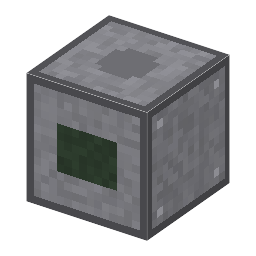

説明
①子ども 仕上がったウェハーのチップを全部、自動で調べ、悪いチップにインクの印を付ける。ダイシングすると良品だけが出る。
②学生 ウェハー＋ボールねじの台（減らない）＋500W、1チップ 0.5秒。漏れの強さが変わっても汚れのないときと同じ動きなら良品（汚れが多いと悪いチップが出る）。
③大人 プローブカードのタングステンの細い針が各チップのパッドにふれ、精密な台がチップからチップへ送る。検査台は手で1個ずつ、電流まで見せる。プローバーは良いか悪いかだけだが、ウェハー全部を速く調べる。
④ガチ 割る前に調べると、悪いチップをパッケージに入れる無駄がなくなる。良品の割合が歩留まり、だいたい Y＝e^(−D×A)（欠陥の密度×チップの面積）。⚠️ 最初の自動プローバーの年（1960年代）は確かめていない、時間はゲームの値。
作り方
使い道
（このアイテムを使うレシピは無い）